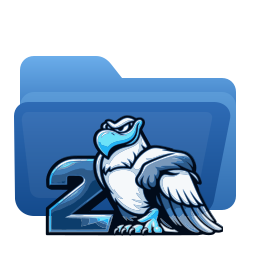

Manuel de Rox-Filer2
Gestionnaire de fichiers rapide et léger pour X11 et Wayland, continuation de ROX-Filer. — 2.14.0-6
Qu'est-ce que Rox-Filer2
Rox-Filer2 est la continuation de ROX-Filer, portée sur GTK3 et enrichie d'une interface moderne, de la prise en charge native de SMB, d'icônes de périphériques et d'un mode bureau fonctionnant aussi bien sous X11 que sous Wayland.
Il fait une seule chose dans un seul processus : il gère vos fichiers et, si vous le souhaitez, votre bureau. Aucun démon, aucune couche de système de fichiers virtuel, aucune dépendance à un environnement de bureau. Tout ce que vous voyez, ce sont des chemins POSIX ordinaires.
Interfaces Classique et Moderne
Rox-Filer2 propose deux styles d'interface qui partagent les mêmes moteurs de fichiers, MIME, montage, Corbeille et Bureau.
- Classique ROX conserve la disposition et la barre d'outils traditionnelles de ROX-Filer. Si vous venez de ROX-Filer, rien n'a bougé.
- Moderne ajoute une barre de menus, une rangée de navigation, des onglets et un panneau latéral avec Emplacements, Périphériques et Réseau.
Choisissez le style permanent dans Options > Interface. Le changement s'applique aux fenêtres ouvertes après le redémarrage de Rox-Filer2.
Pour essayer un style une seule fois sans modifier la préférence enregistrée, lancez rox --classic ou rox --modern.
La fenêtre du gestionnaire
Ouvrez les répertoires par un double-clic. Un simple clic sélectionne ; faites glisser le bouton gauche sur une zone vide pour une sélection au lasso.
- Le bouton droit ouvre le menu contextuel de l'élément sous le pointeur, ou celui de la fenêtre entière sur une zone vide.
- Le bouton du milieu ouvre un répertoire dans une nouvelle fenêtre.
- Retour arrière remonte d'un niveau ; Ctrl+L active la barre d'adresse.
- En Moderne, Ctrl+T ouvre un onglet et Ctrl+W le ferme. Chaque onglet conserve son chemin et son historique.
Basculez entre la vue en icônes et la vue détaillée grâce au sélecteur de vue, et ajustez la taille des icônes avec le curseur.
Bureau ROX
Démarrez le bureau avec rox --desktop. Une seule instance s'exécute à la fois. Elle dessine le fond d'écran, affiche les icônes de votre répertoire de bureau et peut afficher les icônes de périphériques.
- Fond d'écran :
rox --desktop-wallpaper, ou clic droit sur le bureau. Les modes sont remplir, ajuster, étirer, centrer et mosaïque. - Applications :
rox --desktop-appsgère les lanceurs du bureau. - Icônes de périphériques :
rox --desktop-drive-icon-layoutles organise. - Préférences :
rox --desktop-preferences.
Sous X11, le bureau utilise une fenêtre normale avec l'indice de type bureau. Sous Wayland, il utilise la couche d'arrière-plan de Layer Shell, ce qui nécessite gtk-layer-shell et un compositeur publiant zwlr_layer_shell_v1, comme Labwc. Forcez un backend avec rox-x11 --desktop ou rox-wayland --desktop.
Sous X11, Rox-Filer2 publie directement le fond d’écran comme pixmap de la fenêtre racine, afin que les terminaux pseudo-transparents et conky voient la même image sans feh ni xwallpaper.
Périphériques et montage
Les disques locaux et amovibles apparaissent dans le panneau latéral Moderne sous Périphériques, et éventuellement comme icônes du bureau. Cliquez sur un périphérique pour le monter et l'ouvrir ; utilisez le menu contextuel pour le démonter.
Les informations proviennent de lsblk, de /proc/mounts et de sysfs : aucun service d'arrière-plan n'est requis. Monter un périphérique en tant qu'utilisateur ordinaire nécessite udisksctl ou une entrée fstab l'autorisant.
Démontez toujours un support amovible avant de le débrancher. Rox-Filer2 n'écrit pas sur un périphérique après la fermeture de sa fenêtre, mais le noyau peut encore détenir des données non écrites.
Images disque (ISO, IMG, SFS, SquashFS)
Faites un clic droit sur un fichier image et choisissez Monter l'image. Rox-Filer2 l'associe à un périphérique de bouclage et la monte en lecture seule, puis ouvre le résultat comme n'importe quel répertoire. Les extensions prises en charge sont .iso, .img, .sfs, .squashfs, .sqfs et .sqsh.
Une fois montée, le même menu propose Ouvrir l'image montée et Démonter l'image. Les montages se trouvent sous /media/rox-filer2-images/, un répertoire par image.
- Toujours en lecture seule. Le périphérique de bouclage, le périphérique bloc et le montage sont tous en lecture seule : une image ne peut jamais être modifiée par accident.
- En root (le modèle habituel de Puppy et d'Essora), il utilise directement
losetupetmount. En utilisateur ordinaire, il utiliseudisksctl, qui doit être installé. - Les fichiers
.imgbruts peuvent contenir une table de partitions. Lorsque plusieurs sont trouvées, Rox-Filer2 demande laquelle monter et affiche le numéro réel de chaque partition, son système de fichiers, sa taille et son étiquette. Les images ISO et SquashFS sont toujours montées entières, même lorsqu'une ISO hybride expose une table de partitions. - Sans GVfs. L'image devient un montage local ordinaire : la copie, le glisser-déposer, les types MIME et les actions personnalisées se comportent exactement comme ailleurs.
Le montage s'effectue en arrière-plan : une petite fenêtre avec un indicateur d'activité s'affiche pendant la préparation du périphérique de bouclage et l'analyse des partitions, et le gestionnaire reste réactif.
Démontez avant de supprimer ou de déplacer le fichier image. Si un montage disparaît à l'insu de Rox-Filer2, les entrées du menu proposent à nouveau Monter l'image.
SMB et partages Windows
Ouvrez Aller > Se connecter à un partage SMB, ou Parcourir le réseau dans le panneau latéral Moderne. Saisissez le serveur et, si vous le connaissez, le partage ; le bouton de liste demande au serveur quels partages il propose.
Rox-Filer2 monte le partage comme un montage local ordinaire via mount.cifs, au lieu de le présenter par un système de fichiers virtuel. Ainsi la copie, le glisser-déposer, les types MIME, la Corbeille et les actions personnalisées fonctionnent exactement comme sur des fichiers locaux.
cifs-utilsdoit être installé.- Le montage exige root. En utilisateur ordinaire, Rox-Filer2 tente
sudo -n; une règle sans mot de passe pourmount.cifsrevient à accorder root, accordez-la donc en connaissance de cause ou effectuez le montage vous-même. - Votre mot de passe n'est jamais écrit dans la configuration. Il transite par un fichier d'identifiants temporaire lisible par vous seul, supprimé dès que
mount.cifsse termine. Seuls le serveur, le partage, l'utilisateur et le domaine sont mémorisés.
Corbeille
Supprimer depuis le menu déplace les éléments vers la Corbeille XDG, afin de pouvoir les restaurer. Restaurez depuis le menu contextuel du répertoire de la Corbeille.
La Corbeille ne fonctionne qu'au sein du même système de fichiers que le répertoire de corbeille. Supprimer un fichier sur une autre partition ou sur un support amovible peut être irréversible, et Rox-Filer2 vous prévient dans ce cas.
Types de fichiers et Ouvrir avec
Les types de fichiers proviennent de la base MIME partagée, ainsi que de tout attribut étendu posé sur le fichier lui-même. Le menu contextuel liste les applications enregistrées pour ce type sous Ouvrir avec.
Définissez un gestionnaire permanent, ou une icône personnalisée, depuis les entrées Définir l'icône et Définir l'action de l'élément. Elles sont enregistrées dans votre propre configuration et ne modifient jamais la base système.
Actions personnalisées et modèles
Les actions personnalisées ajoutent vos propres commandes au menu contextuel, en recevant les chemins sélectionnés comme arguments. Ce sont des fichiers desktop ordinaires, vous pouvez donc en copier un d'une machine à l'autre.
Les modèles permettent de créer depuis le menu contextuel un fichier vide d'un type donné. Ajoutez les vôtres en déposant un fichier dans le répertoire Templates du répertoire de l'application.
Recherche, signets et fenêtres jumelées
- Recherche :
rox-findcherche par nom, taille, type et contenu, et renvoie les résultats au gestionnaire. - Signets : gardent à un clic les répertoires fréquents ; en Moderne ils apparaissent aussi sous Emplacements.
- Fenêtres jumelées :
rox --pairouvre deux fenêtres côte à côte pour copier entre répertoires, etrox --pair-realignles réaligne.
Options et fichiers de configuration
Ouvrez Options depuis le menu Édition, depuis le menu du bureau ou avec rox --config-rox.
Vos réglages se trouvent dans le répertoire de configuration XDG, normalement ~/.config/rox.sourceforge.net/ROX-Filer/. Les fichiers sont en XML, INI et texte brut : vous pouvez les sauvegarder, les éditer ou les copier d'une machine à l'autre. Supprimer un fichier restaure ce groupe de valeurs par défaut.
Ligne de commande
rox— choisit automatiquement le backend X11 ou Wayland.rox-x11,rox-wayland— forcent un backend.rox DIR— ouvre un répertoire.rox -d DIR— l'ouvre comme répertoire même s'il s'agit d'un répertoire d'application.rox -D DIR— ferme ce répertoire et ses sous-répertoires.rox --classic,rox --modern— substitution temporaire de l'interface.rox --desktop— démarre le bureau ;--desktop-refreshrafraîchit celui qui tourne.rox --help— la liste complète.
Diagnostic
La journalisation est désactivée par défaut. Démarrez avec rox --debug pour écrire un journal technique, --log-file=FICHIER pour choisir l'emplacement, et --log-level=NIVEAU parmi error, warning, info, debug ou trace. rox --clear-logs supprime les journaux gérés automatiquement par Rox-Filer2.
Joignez ce journal à tout signalement. Il indique quel backend de bureau a été retenu, quel style d'interface est actif et pourquoi un montage SMB ou une analyse de périphériques a échoué.
Signaler un problème
Signalez bogues et suggestions sur la page du projet, github.com/josejp2424/ROX-Filer-gtk3.
Précisez votre version (voir Aide > À propos de Rox-Filer2), si vous utilisez X11 ou Wayland, quel style d'interface, et les étapes exactes qui reproduisent le problème.